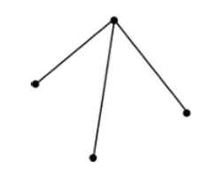
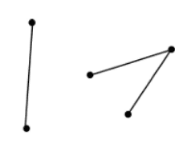

3. Desarrollo
3.1 Introducción a la Teoría de Grafos y Estructuras Discretas.
Teoria de Grafos
3.1.1 ¿Qué es un Grafo?
Un Grafo es una estructura matemática que consiste en un conjunto de nodos (o vértices) y un conjunto de aristas (o arcos) que conectan pares de nodos. Las aristas pueden ser dirigidas o no dirigidas, dependiendo de si tienen una dirección específica. Los grafos se utilizan para modelar diversas situaciones en las que es importante representar relaciones entre elementos.
Algunos ejemplos de aplicaciones de grafos son:
- Redes sociales: Los nodos representan personas y las aristas representan amistades.
- Redes informáticas: Los nodos son dispositivos y las aristas son conexiones entre ellos.
- Circuitos electrónicos: Los nodos son componentes y las aristas son conexiones eléctricas.
 Cánovas Peña, J. S. (s. f.). Teoría de grafos. Departamento de Matemática Aplicada y Estadística. Figura 1.: Ejemplos de grafo simple, multigrafo y pseudografo, p. 3.
Cánovas Peña, J. S. (s. f.). Teoría de grafos. Departamento de Matemática Aplicada y Estadística. Figura 1.: Ejemplos de grafo simple, multigrafo y pseudografo, p. 3.
3.1.2 Contexto Histórico
La teoría de grafos tiene sus raíces en el siglo XVIII gracias al matemático suizo Leonhard Euler.
En 1736, Euler se enfrentó al famoso problema de los siete puentes de Königsberg, intentando averiguar si era posible cruzar cada puente de la ciudad una sola vez.
Este problema llevó a la creación de los conceptos básicos de la teoría de grafos.
Observa la representación gráfica del problema:
 Solano, J. (2024). Algoritmos de grafos. Universidad Nacional Autónoma de México, Facultad de Ingeniería, Departamento de Computación. [Problema de los 7 puentes]. Página 9.
Solano, J. (2024). Algoritmos de grafos. Universidad Nacional Autónoma de México, Facultad de Ingeniería, Departamento de Computación. [Problema de los 7 puentes]. Página 9.
Con el tiempo, varios matemáticos hicieron aportes importantes a esta teoría:
- En 1847, Gustav Kirchhoff utilizó la teoría de grafos para analizar circuitos eléctricos, formulando las leyes de Kirchhoff.
- En 1852, Francis Guthrie planteó el problema de los cuatro colores, que fue resuelto casi un siglo después, ayudando a definir términos clave en la teoría.
- En 1857, Arthur Cayley usó grafos para estudiar isómeros químicos.
- El término "grafo" proviene del inglés "graphic notation", utilizado por primera vez por Edward Frankland y adoptado por Alexander Crum Brown en 1884.
Estos avances sentaron las bases para el desarrollo de la teoría de grafos y su aplicación en diversas disciplinas.
3.1.3 Tipo de Grafos y Propiedades Clave
Los grafos se clasifican en diferentes tipos según sus características y propiedades. Algunas de las clasificaciones más comunes son:
Grafos Dirigidos (Digrafos): En estos grafos, las aristas tienen una dirección, es decir, van de un vértice a otro en un solo sentido. Son útiles para modelar situaciones donde las relaciones no son bidireccionales, como en las redes de flujo de tráfico.
Grafos No Dirigidos: En estos grafos, las aristas no tienen dirección, lo que significa que la relación entre los vértices es bidireccional. Se utilizan en situaciones donde las conexiones son mutuas, como en las redes sociales.
Grafos Ponderados: En estos grafos, cada arista tiene un peso asociado que puede representar distancia, costo, tiempo, etc. Son esenciales para problemas de optimización como encontrar el camino más corto.
Grafos No Ponderados: En estos grafos, las aristas no tienen peso. Se utilizan para modelar relaciones simples sin necesidad de cuantificar la conexión.
A su vez los grafos tienen propiedades que son de suma importancia, ya sea para su manipulación y entendimiento, tales propiedades son las siguientes:
Grado de un Nodo: Es el número de aristas que inciden en un nodo. En grafos dirigidos, se distingue entre grado de entrada y grado de salida.
Camino: Es una secuencia de vértices donde cada par consecutivo está conectado por una arista. Un camino simple no repite vértices.
Ciclo: Es un camino que comienza y termina en el mismo vértice. Un ciclo simple no repite vértices ni aristas.
Conectividad: Indica si existe un camino entre cualquier par de vértices en el grafo. Un grafo es conexo si todos sus vértices están conectados.
Cada uno de estos tipos de grafos y propiedades clave tiene aplicaciones específicas en diversos campos, desde redes informáticas hasta biología computacional. Comprender estas clasificaciones y propiedades es fundamental para el análisis y la manipulación efectiva de grafos en contextos reales.
Por ejemplo en redes informáticas, los grafos dirigidos se utilizan para modelar la transferencia de datos, utilizando aristas con direcciones específicas. Los grafos no dirigidos son esenciales para representar conexiones bidireccionales en redes sociales y sistemas de comunicación, mientras que los grafos ponderados son esenciales para encontrar la ruta más eficiente entre dos nodos.
En biología computacional, los grafos se emplean para representar interacciones entre proteínas y genes, lo que permite analizar y predecir comportamientos biológicos complejos.
3.1.4 Aplicaciones de la Teoría de Grafos y Estructuras Discretas
La teoría de grafos y las estructuras discretas tienen una amplia gama de aplicaciones en diversos campos. Algunas de las aplicaciones más destacadas son:
- Redes Informáticas: Se utilizan para modelar conexiones y flujos de datos. Los grafos pueden representar la topología de una red, optimizar rutas de datos y detectar cuellos de botella. Por ejemplo, en el diseño de redes de computadoras, los grafos ayudan a determinar la ruta más eficiente para la transmisión de datos, minimizando la latencia y maximizando el ancho de banda.
- Algoritmos de Optimización: Permiten encontrar el camino más corto o el árbol de expansión mínima, entre otros. Algoritmos como Dijkstra, Kruskal y Prim son fundamentales en este campo. Estos algoritmos se aplican en la planificación de rutas de transporte, la distribución de recursos y la gestión de redes de suministro, donde es crucial encontrar soluciones óptimas para minimizar costos y tiempos.
- Bases de Datos: Ayudan a modelar las relaciones entre diferentes entidades. Los grafos se utilizan en bases de datos orientadas a grafos para consultas eficientes sobre relaciones complejas. Por ejemplo, en redes sociales, las bases de datos de grafos permiten realizar consultas rápidas sobre las conexiones entre usuarios, identificar comunidades y analizar patrones de interacción.
- Inteligencia Artificial: Se emplean para representar conocimiento y facilitar el razonamiento. Los grafos son esenciales en la representación de redes neuronales, planificación y búsqueda de soluciones. En el aprendizaje automático, los grafos se utilizan para modelar relaciones entre datos, mejorar la precisión de los algoritmos de clasificación y predicción, y optimizar la estructura de las redes neuronales.
- Biología Computacional: Los grafos se utilizan para modelar y analizar redes biológicas, como las interacciones entre proteínas y genes. Esto permite a los investigadores comprender mejor los procesos biológicos, identificar posibles dianas terapéuticas y predecir el comportamiento de sistemas biológicos complejos.
- Teoría de Redes Sociales: Los grafos se utilizan para estudiar las interacciones y relaciones entre individuos en una red social. Esto incluye el análisis de la estructura de la red, la identificación de influenciadores clave y la detección de comunidades dentro de la red.
- Logística y Transporte: Los grafos se aplican en la planificación y optimización de rutas de transporte, la gestión de flotas y la distribución de mercancías. Esto ayuda a reducir costos, mejorar la eficiencia y garantizar la entrega oportuna de productos.
- Química y Farmacología: Los grafos se utilizan para modelar estructuras moleculares y reacciones químicas. Esto facilita el diseño de nuevos compuestos químicos y medicamentos, así como el análisis de sus propiedades y comportamientos.
3.2 Conceptos Básicos de Grafos
Para poder comprender como funcionan los grafos, es necesario conocer los conceptos básicos que los conforman. A continuación, se presentan los elementos fundamentales de los grafos y sus propiedades clave.
3.2.1 Vértices y Aristas
En un grafo, los vértices (o nodos) son los elementos que representan las entidades u objetos de interés, mientras que las aristas (o arcos) son las conexiones entre esos vértices.
 Solano, J. (2024). Algoritmos de grafos. Universidad Nacional Autónoma de México, Facultad de Ingeniería, Departamento de Computación. [Grafo de distancias entre ciudades]. Página 12.
Solano, J. (2024). Algoritmos de grafos. Universidad Nacional Autónoma de México, Facultad de Ingeniería, Departamento de Computación. [Grafo de distancias entre ciudades]. Página 12.
Para entender a profundidad estos conceptos, es esencial tener en cuenta:
- Vértices (V): Son los elementos o puntos que forman un grafo. En un grafo denotado por G, el conjunto de vértices se expresa como V(G). Cada vértice puede tener múltiples conexiones, reflejadas mediante aristas.
- Aristas (A): Son los enlaces entre los vértices. Se denotan como pares de vértices (u,v). Estas conexiones pueden ser:
- No dirigidas: Cuando la relación entre dos vértices no tiene una dirección específica.
- Dirigidas: Cuando existe una dirección que va desde un vértice u hacia otro vértice v. Esto se denota como (u→v).
"Cada arista solo puede unir un par de nodos del conjunto V(G). Una arista que enlaza al nodo u con el nodo v se denota como: a=(u, v)" (Solano, s.f., p. 14).
3.2.2 Grado de un Vértice
El grado de un vértice es el número de aristas que inciden en él. Esta métrica es fundamental para estudiar la estructura de un grafo.
 Solano, J. (2024). Algoritmos de grafos. Universidad Nacional Autónoma de México, Facultad de Ingeniería, Departamento de Computación. [Grado de dos vértices]. Página 18.
Solano, J. (2024). Algoritmos de grafos. Universidad Nacional Autónoma de México, Facultad de Ingeniería, Departamento de Computación. [Grado de dos vértices]. Página 18.
Los grados se dividen en:
Grado de un vértice en grafos no dirigidos: En un grafo no dirigido, el grado de un vértice v (denotado como grado(v)) es simplemente el número de aristas conectadas a él. Si un vértice tiene un grado igual a cero, se le denomina vértice aislado, ya que no tiene aristas incidentes.
Grado de entrada y grado de salida en grafos dirigidos: En un grafo dirigido, se distinguen dos tipos de grados para un vértice v:
- Grado de entrada: Es el número de aristas que llegan al vértice v.
- Grado de salida: Es el número de aristas que salen del vértice v.
3.2.3 Tipos de Grafos
Los grafos se clasifican en diversos tipos según sus características y propiedades estructurales:
Grafo simple: Son aquellos que no tienen lazos ni aristas múltiples entre pares de vértices. Son los grafos más básicos.
Cánovas Peña, J. S. (s. f.). Teoría de grafos. Departamento de Matemática Aplicada y Estadística. Figura 1.2: Ejemplos de grafo simple, multigrafo y pseudografo, p. 3.
Multigrafos: Permiten múltiples aristas entre un par de vértices y pueden tener lazos. Este tipo de grafos se utiliza para modelar situaciones en las que existen conexiones redundantes o múltiples relaciones entre elementos.
Cánovas Peña, J. S. (s. f.). Teoría de grafos. Departamento de Matemática Aplicada y Estadística. Figura 1.2: Ejemplos de grafo simple, multigrafo y pseudografo, p. 3.
Grafos completos: Son aquellos en los que cada par de vértices está conectado por una arista. En un grafo completo de n vértices, cada vértice se conecta con n−1 vértices más.
Cánovas Peña, J. S. (s. f.). Teoría de grafos. Departamento de Matemática Aplicada y Estadística. Figura 1.3: Ejemplos de grafo completo, p. 4.
Grafos conexos: Son aquellos en los que existe al menos un camino entre cualquier par de vértices. La conectividad en un grafo es clave para modelar redes de transporte, comunicación y otros sistemas interconectados.

Cánovas Peña, J. S. (s. f.). Teoría de grafos. Departamento de Matemática Aplicada y Estadística. Figura 1.5: Ejemplos de grafo conexo, p. 5.
Grafo no conexo: Un grafo no conexo es aquel en el que existen vértices que no están conectados entre sí a través de ningún camino. Es decir, no se puede ir de un vértice a otro mediante una secuencia de aristas. Un grafo no conexo puede descomponerse en componentes conexos, que son subgrafos conexos donde cada componente conexo no tiene conexiones con los demás componentes del grafo.

Cánovas Peña, J. S. (s. f.). Teoría de grafos. Departamento de Matemática Aplicada y Estadística. Figura 1.5: Ejemplos de grafo no conexo, p. 5
Árboles: Un árbol es un tipo especial de grafo conexo que no contiene ciclos y tiene un único camino entre cada par de vértices. Los árboles son fundamentales para representar estructuras jerárquicas y rutas únicas en diferentes contextos.
 Cánovas Peña, J. S. (s. f.). Teoría de grafos. Departamento de Matemática Aplicada y Estadística. Figura 1.10: Ejemplos árboles, p. 10
Cánovas Peña, J. S. (s. f.). Teoría de grafos. Departamento de Matemática Aplicada y Estadística. Figura 1.10: Ejemplos árboles, p. 10
Grafos ponderados: En este tipo de grafos, cada arista tiene un valor numérico asociado (peso), que puede representar una distancia, costo o alguna otra medida. Los grafos ponderados son útiles para resolver problemas de optimización como la búsqueda de rutas mínimas.
Cánovas Peña, J. S. (s. f.). Teoría de grafos. Departamento de Matemática Aplicada y Estadística. Figura 1.12: Ejemplo de grafo ponderado, p. 10.
Grafo dirigido: En la teoría de grafos, una gráfica dirigida o digráfica se caracteriza por la presencia de aristas que tienen una dirección específica. Como menciona Solano (s.f.), "una gráfica dirigida (o digráfica) G se caracteriza porque cada arista a tiene una dirección asignada y, por tanto, cada arista está asociada a un par ordenado (u, v) de vértices" (p. 31).
 Solano, J. (2024). Algoritmos de grafos. Universidad Nacional Autónoma de México, Facultad de Ingeniería, Departamento de Computación. [Grafo dirigido]. Página 31.
Solano, J. (2024). Algoritmos de grafos. Universidad Nacional Autónoma de México, Facultad de Ingeniería, Departamento de Computación. [Grafo dirigido]. Página 31.
3.3 Representaciones: Matriz de adyacencia y lista de adyacencia
3.3.1 Matriz de adyacencia
"Una matriz de adyacencia es una matriz booleana de orden n, donde n indica el número de vértices de G. Tanto los renglones como las columnas de la matriz representan los nodos de la gráfica y su contenido representa la existencia (1) o no (0) de arcos entre los nodos i y j" (Solano, s.f., p. 35).
A continuación, vemos el ejemplo de un grafo dirigido y su matriz de adyacencia.
 Solano, J. (2024). Algoritmos de grafos. Universidad Nacional Autónoma de México, Facultad de Ingeniería, Departamento de Computación. [Grafo dirigido y su matriz de adyacencia]. Página 36.
Solano, J. (2024). Algoritmos de grafos. Universidad Nacional Autónoma de México, Facultad de Ingeniería, Departamento de Computación. [Grafo dirigido y su matriz de adyacencia]. Página 36.
Cuando se trata de grafos ponderados en lugar de 1 el valor que tomará será el peso de la arista.
Si el grafo es no dirigido hay que asegurarse de que se marca con un 1 (o con el peso) tanto la entrada a[i][j] como la entrada a[j][i], puesto que se puede recorrer en ambos sentidos. En el caso de un grafo no dirigido, la matriz de adyacencia siempre es simétrica.
Gracias a la matriz de adyacencia, podemos conocer cuántos caminos existen de un vértice a otro:
 Cánovas Peña, J. S. (s. f.). Teoría de grafos. Departamento de Matemática Aplicada y Estadística. Teorema 1.3.1: La matriz de adyacencia, p. 9.
Cánovas Peña, J. S. (s. f.). Teoría de grafos. Departamento de Matemática Aplicada y Estadística. Teorema 1.3.1: La matriz de adyacencia, p. 9.
3.3.2 Lista de adyacencia
Una lista de adyacencia es una forma de representar grafos que se utiliza comúnmente en teoría de gráficas. En esta representación, cada vértice del grafo tiene una lista asociada que contiene todos los vértices a los que está conectado mediante aristas.
Solano, J. (2024). Algoritmos de grafos. Universidad Nacional Autónoma de México, Facultad de Ingeniería, Departamento de Computación. [Grafo dirigido y su lista de adyacencia]. Página 40.
En un grafo no dirigido, la lista de adyacencia de un vértice v incluye todos los vértices u tales que hay una arista entre v y u.
3.4 Recorridos en grafos
3.4.1. Algoritmos de búsqueda en anchura (BFS)
La idea básica de la búsqueda en anchura es desplegarse a tantos vértices como sea posible antes de penetrar en profundidad dentro de un árbol. Esto significa que visitaremos todos los vértices adyacentes a uno dado antes de cambiar de nivel. Es uno de los algoritmos fundamentales para explorar grafos y tiene aplicaciones en problemas de conectividad, búsqueda de caminos más cortos en grafos no ponderados, y análisis de redes.
CONSTRUCCIÓN DEL ALGORITMO
Dado un vértice inicial en una gráfica G=(V,E), el algoritmo BFS sigue los siguientes pasos:
INICIO
Marca el nodo de inicio como visitado y este último se añade a la cola
RECORRIDO
Mientras la cola no esté vacía, se desencola un vértice de la cola
Para cada vértice recorrido, se comprueba si su vértice vecino ha sido visitado
En caso de no ser visitado, se recorre, se marca como visitado y se añade a la cola
FIN
El algoritmo termina cuando la cola está vacía, lo que significa que se han explorado todos los vértices alcanzables desde el vértice inicial.
3.4.2 Algoritmos de búsqueda en profundidad (DFS)
La idea básica de búsqueda en profundidad es penetrar tan profundamente como sea posible dentro de un árbol antes de desplegarse a otros vértices. Esto se consigue al tomar el nuevo vértice adyacente al último de los posibles vértices anteriores. Este algoritmo es ampliamente utilizado en la teoría de grafos y tiene aplicaciones en la detección de ciclos, el análisis de componentes conexos, y en problemas de recorrido y conectividad en redes.
CONSTRUCCIÓN DEL ALGORITMO
Dado un vértice inicial en una gráfica G=(V,E), el algoritmo DFS sigue estos pasos:
INICIO
Selecciona un vértice de inicio y se marca como visitado
Se exploran los nodos vecinos del vértice de inicio
RECORRIDO
Si algún nodo no ha sido visitado se marca como visitado y se realiza una llamada recursiva para el vértice vecino no visitado o bien se apila y se sigue el proceso iterativamente.
RETROCESO
Una vez que todos los vecinos de un vértice han sido visitados, el algoritmo "retrocede" al vértice anterior para explorar otros caminos no visitados.
FIN
El proceso continúa hasta que todos los vértices alcanzables desde el vértice de inicio hayan sido visitados.
3.5 Isomorfismo y Propiedades de Grafos
3.5.1. Isomorfismo de Grafos
Para que dos grafos sean isomorfos, debe de existir una correspondencia uno a uno entre los nodos de los dos grafos y, además, conservan la adyacencia entre los nodos, así como la dirección de las aristas, si estas existen.
Para ser isomorfos dos grafos, deben de cumplir con:
Dos grafos isomorfos deben tener el mismo número de vértices, ya que hay una aplicación biyectiva entre los conjuntos de vértices de los grafos.
Dos grafos isomorfos deben tener el mismo número de aristas.
Los grados de los vértices en grafos simples isomorfos deben ser los mismos. Es decir, un vértice v de grado d en G1 se corresponde con un vértice f(v) de grado d en G2, ya que un vértice w en G1 es adyacente a v si y sólo si f(v) y f(w) son adyacentes en G2.
 Caballero Palomino, M. Á., Migallón Gomis, V., & Penadés Martínez, J. (Año). Prácticas de matemática discreta con MaGraDa [Foto 1]. Universidad de Alicante. p. 54.
Caballero Palomino, M. Á., Migallón Gomis, V., & Penadés Martínez, J. (Año). Prácticas de matemática discreta con MaGraDa [Foto 2]. Universidad de Alicante. p. 54.
Caballero Palomino, M. Á., Migallón Gomis, V., & Penadés Martínez, J. (Año). Prácticas de matemática discreta con MaGraDa [Foto 1]. Universidad de Alicante. p. 54.
Caballero Palomino, M. Á., Migallón Gomis, V., & Penadés Martínez, J. (Año). Prácticas de matemática discreta con MaGraDa [Foto 2]. Universidad de Alicante. p. 54.
En general, cuando dos grafos son isomorfos pensamos en ellos como si fueran el mismo grafo. Dos grafos no son isomorfos si no cuentan con el mismo número de vértices y aristas. Si efectivamente cuentan con el mismo número de vértices y aristas, tampoco se garantiza que sean isomorfos.
En ese sentido, verificar la correspondencia entre grados puede ser de utilidad. Sin embargo, incluso si coinciden en los grados de sus vértices, ello no implica que sean isomorfos. La única forma de probarlo es afirmar o refutar la existencia de la función biyectiva f: V(G) -> V(G*). Sea n = Card(V(G)) = Card(V(G*))(Emparejar los vértices de un grafo G y G*), Entonces, de acuerdo a lo anterior, se tendrían que examinar a lo más n!(n factorial) posibles funciones.
3.6 Software para manipulación de Grafos
3.6.1 Herramientas de Software Libre en Matemáticas Discretas
Entre las herramientas de software libre destacadas en el ámbito de las matemáticas discretas se encuentran:
3.6.1.1 Maxima: Este sistema de álgebra computacional permite realizar cálculos simbólicos y numéricos, facilitando el análisis de estructuras complejas como las matrices de adyacencia en grafos. Maxima es ideal para el desarrollo de habilidades analíticas, promoviendo la comprensión de la relación entre representaciones gráficas y algebraicas (Villalpando Becerra & Pantoja Rangel, 2016, p. 21).
3.6.1.2 GeoGebra: Conocido principalmente por su aplicación en geometría, GeoGebra también permite representar y manipular grafos de manera visual e interactiva. Los estudiantes pueden explorar propiedades estructurales de los grafos, analizar caminos y ciclos, y mejorar su comprensión a través de un aprendizaje práctico y visual (Villalpando Becerra & Pantoja Rangel, 2016, p. 22).
3.6.3 Dia: Herramienta de diagramación que facilita la creación de representaciones visuales de nodos y aristas en grafos, permitiendo a los estudiantes analizar conceptos como conectividad y recorridos. Aunque no se dedica exclusivamente a la teoría de grafos, su flexibilidad la convierte en una herramienta eficaz para este tipo de representaciones (Villalpando Becerra & Pantoja Rangel, 2016, p. 23).